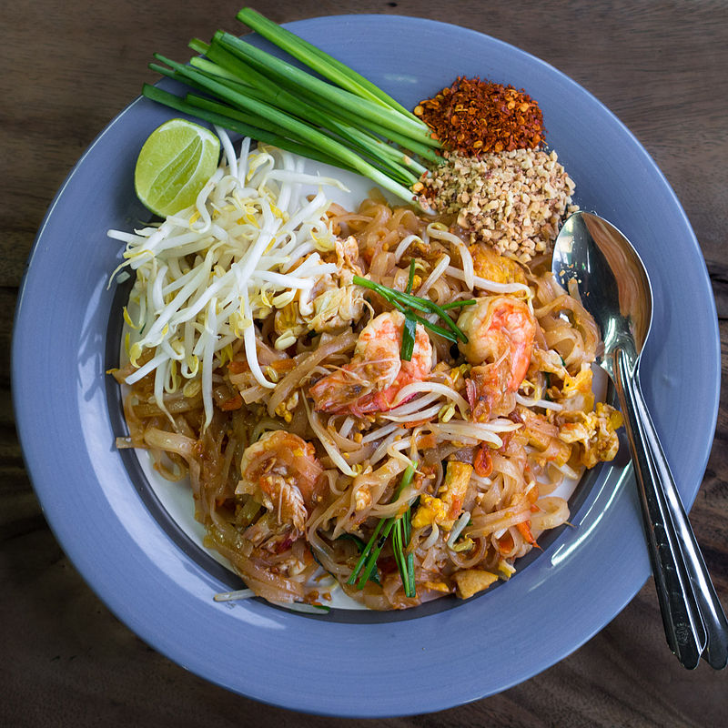

Pad Thai Recipe

Overview
Pad Thai is agruably Thailand's most famous dish.
It contains a mixture of noodles with a protein of your choice.
The spicy level can also vary considerably.
The dish also
contains peanuts, a scambled egg, bean sprouts, and other
vegetables
Ingredients
Here the list of ingredients
- sitr-fried noodle
- eggs
- tofu
- peanuts
- fish sauce
Steps
Here are the steps to make pad-Thai
- Whisk together Pad Thai Sauce
- Prep the protein and vegetables
- Whisk the eggs
- Cook the noodles
- Stir fry it all together!